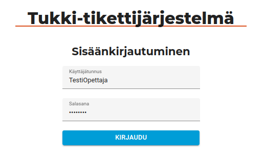

Tukki -tikettijärjestelmän frontend
English version of this document
Esittelen tässä Digivertaisverkkohankeessa toteutettua Tukki -tikettijärjestelmän frontendiä, jota olin toteuttamassa.
Frontend on toteutettu Angularilla. Ohjelmointikielenä oli Typescript ja tyylimäärittelyissä SASS/SCSS. Tekemäni ylläpitäjälle suunnatun voi lukea täältä. Siinä on eritelty tarkemmin käytettyjä tekniikoita ja sovelluksen arkkitehtuuria.
Sovelluksen kuvaus
Sovellus on suunnattu ohjelmointia korkeakouluissa opettaville opettajille ja opiskelijoille. Sen tarkoituksena on helpottaa heidän välistä kommunikaatiota. Sovelluksella oppilaat voivat esittää kurssin opettajille kysymyksiä, jotka ovat näkyvillä vain opettajille ja opettajat voivat vastata näihin lisäämällä kysymyksiin kommentteja.
Mitä tein projektissa
Tekniseen tiimiin kuului lisäksi kaksi tiimiläistä. Alla erittely, mitä osa-alueita tein ja mitkä olivat toisten tekemiä:
Osa-alueet, jotka olen tehnyt frontendin osalta
- Frontend-arkkitehtuuri
- Suuren osan toteutuksesta
- Tekninen dokumentaatio
- Lähes kaikki yksikkötestit
Muiden tiimiläisten tekemää
- Sovelluksen toiminnallisuus- ja käyttöliittymäsuunnittelu
- Osia frontendista: Rich text editori, UKK:n tekeminen kysymyksestä, profiilinäkymä, kysymys-näkymien lisäkentät, tietosuojaselosteen sisältö.
Toteutuksen esittely
Tässä ei käydä läpi kaikkia järjestelmän toimintoja tai näkymiä, mutta esitellään joitain poimintoja. Sovellus on suunniteltu käytettäväksi ensisijaisesti tietokoneen näytöltä sekä myöskin tablettikoossa. Saavutettavuuteen on kiinnitetty huomiota.
Kysymysten listaus on sovelluksen päänäkymä. Tässä näkymä käytettynä Moodle-upotuksen ulkopuolella. Opettajana kirjautuneena näkyvät kaikki kurssin opettajille esitetyt kysymykset. Oppilaalle näkyvät kaikki hänen lähettämät kysymykset. Kaikille ovat nähtävillä lisäksi opettajien kurssille lähettämät Usein kysytyt kysymykset.
Opettajat saavat halutessaan näkyville ratkaistuiksi asetetut kysymykset. “Kysy opettajilta” -napilla voi esittää opettajille uuden kysymyksen.
Taulukko on tehty Angular Material -kirjastoa hyödyntäen ja on responsiivinen. Rivit voi järjestää eri sarakkeiden mukaan ja niitä voi suodattaa eri kysymysten sisältämien tietojen mukaan. Taulukon sisältö päivittyy minuutin välein tai manuaalisesti ikonia-klikkaamalla.

Sovelluksessa käytetyn kielen voi vaihtaa englanniksi. Käyttäjät voivat tarkastella käyttäjäprofiiliaan ja opettajat voivat muokata kurssin asetuksia.

Järjestelmää voi käyttää Moodleen upotettuna tai sen ulkopuolella. Upotuksessa kirjautumistieto saadaan Moodlesta. Sen ulkopuolella käytettynä kirjautuminne tehdään manuaalisesti tunnuksella ja salasanalla. Kirjautumisessa käytetään monivaiheista Authorization Code Flow:a.

Yksittäisen kysymyksen näkymässä käyttäjä voi tarkastella kysymyksen tietoja. Opettaja voi kopioi kysymyksen UKK:ksi tai asettaa sen ratkaistuksi. kysymyksen lähettäjä voi poistaa tai muokata sitä. Opettajat ja opiskelija voivat lisätä kysymykseen kommentteja, jotka näkyvät kysymyksen alla. Käyttäjät voivat muokata omia kommenttejaan.

Kysymyksen ja kommentin yhteydessä näkyy lähettäjän nimi, rooli, avatar-ikoni ja kommentin lähettämis- ja muokkaamispäivämäärä.
Kommenttia muokatessa sen voi poistaa, muuttaa kommentin tai tekstin tilaa sekä lisätä tai poistaa liitteitä. Liite-komponentin olen tehnyt itse.

Tiedostoja lähetetään rinnakkain ja niiden lähetyksen lähetyksen tila päivitetään edistymispalkeilla. Tässä on käytetty RxJS -kirjastoa.

Uuden UKK:n lisäämisen näkymä. Tässä käyttäjä on painanut “Alkuun” -nappi kesken muokkauksen, jolloin kysytään varmistusta. Lomakkeiden validointiin on käytetty Angular Reactive Forms:a.
Kurssilla olevata opettajat voivat muuttaa kurssin asetuksia, ladata ja lisätä usein kysyttyjä kysymyksiä sekä kurssin asetuksia ja kutstua ulkopuolisia osallistumaan kurssille. Lisäkenttien editointi-ikonia valitsemalla avautuu niiden muokkausnäkymä.

Lisäkenttien muokkausnäkymä. Monivalintojen lisääminen on toteutettu Angular Materialin chipseillä.